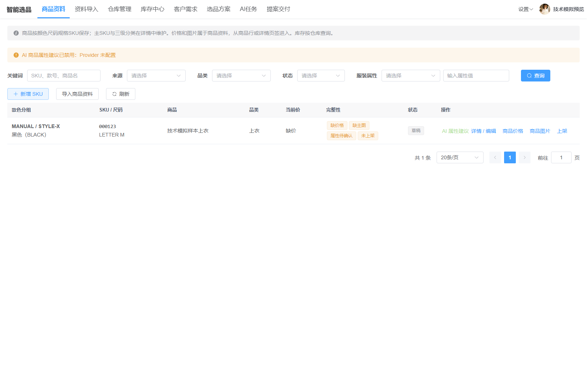
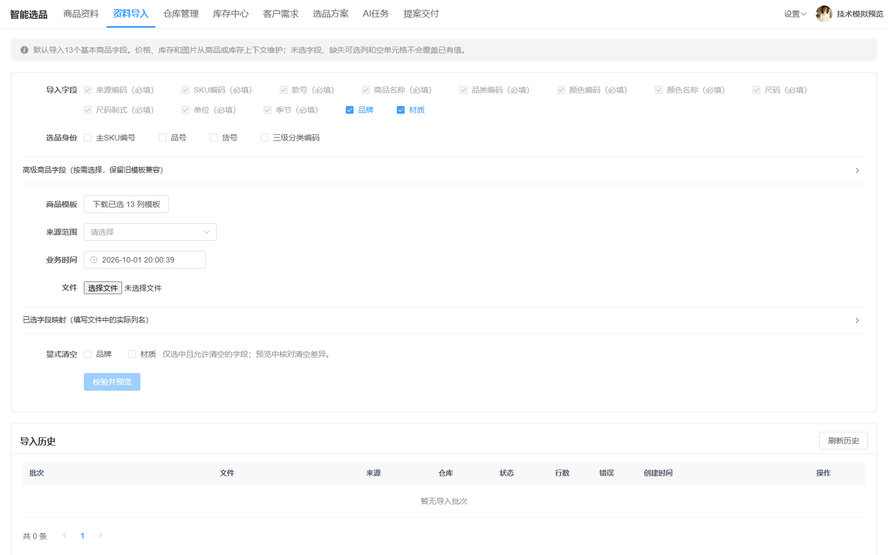
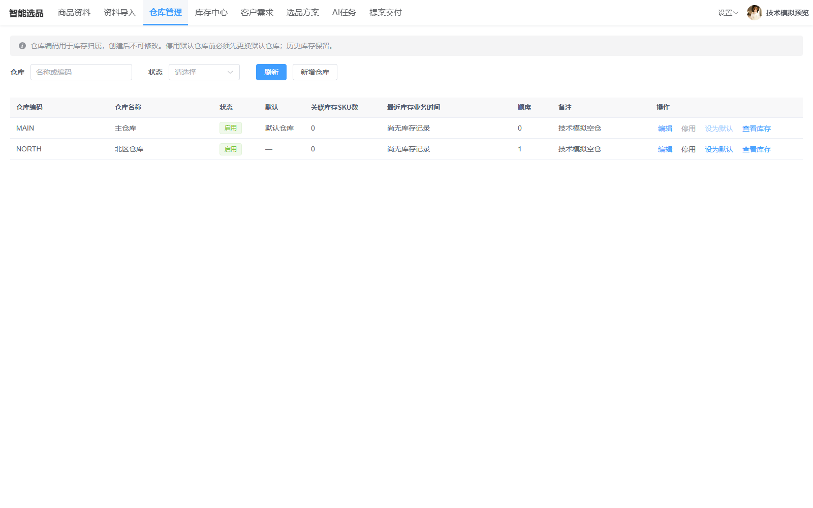
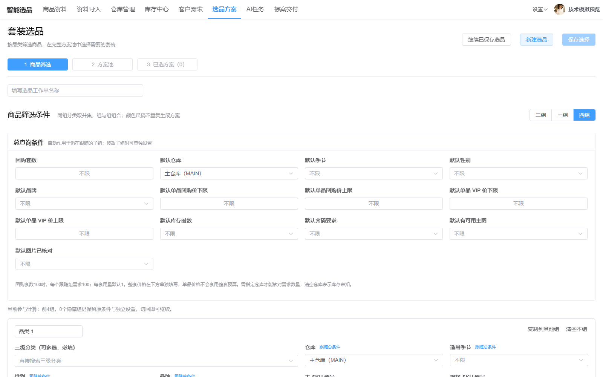
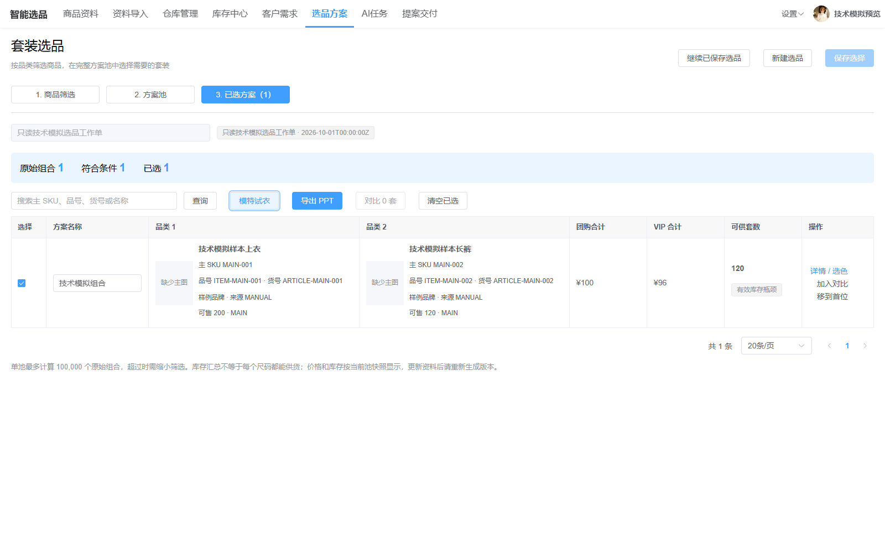
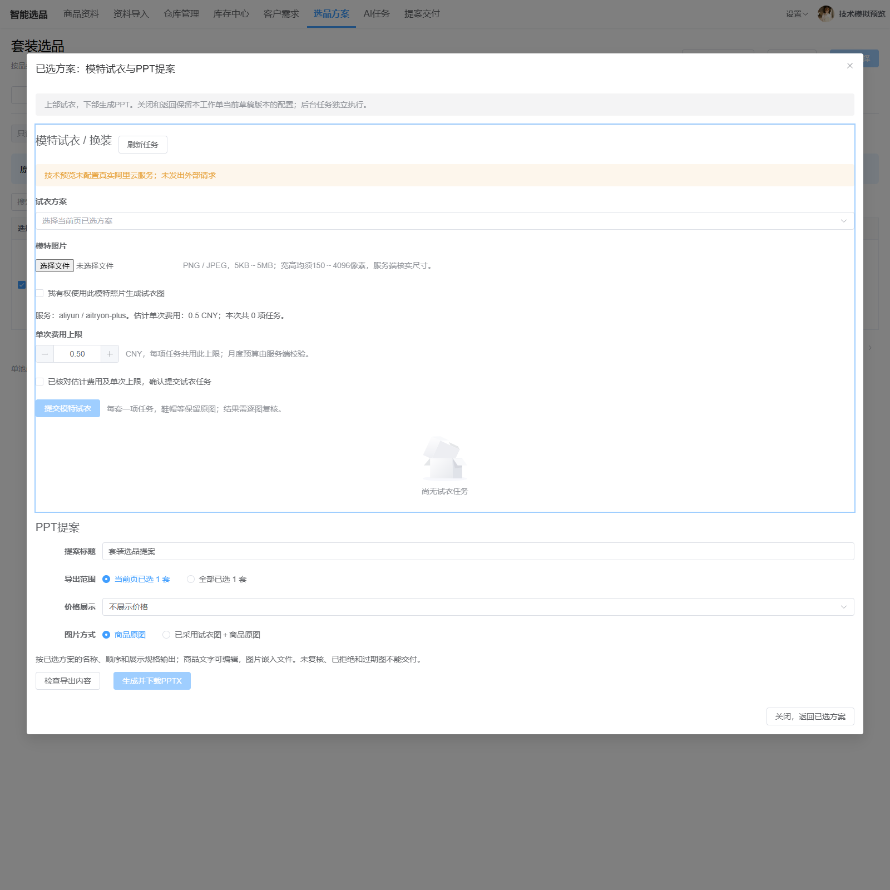
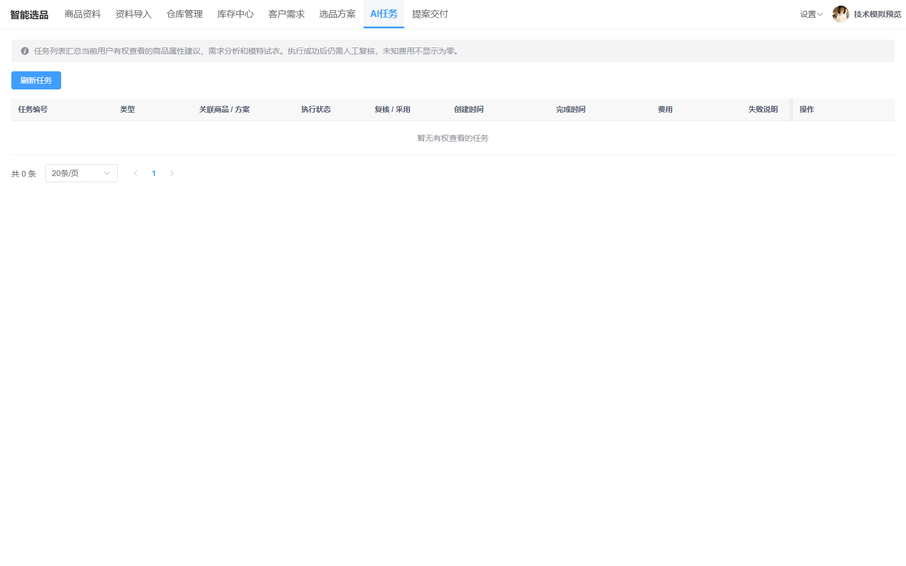
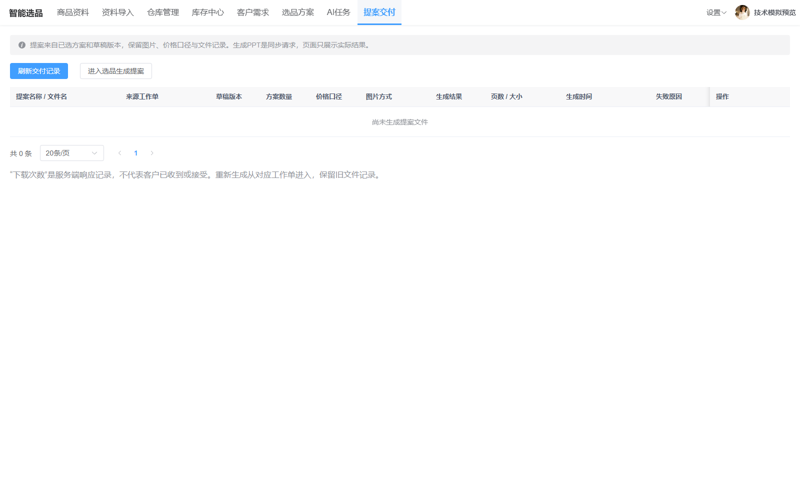

智能选品设计1.2：实际页面技术预览
2026-10-01｜两批源码改造及最终技术检查已完成。前端18文件80项单测、Java16类86项定向测试、类型检查、前端生产构建及管理端聚合打包通过。
以下为实际Vue页面的截图，数据由只读测试夹具提供。全部API写请求被拒绝，未连接业务数据库、未执行迁移、未调用阿里云或生成真实提案文件。业务验收仍按用户要求暂停；截图不计业务通过。
商品资料
保留原有商品资料列表；价格和图片从商品行操作进入。

基础商品导入
默认13项基本字段，其中11项必填；完整字段可按稳定标识映射。

仓库管理
仓库来自既有字典；无库存的仓库可选，默认仓库停用受保护。

总条件与四组
默认四组，可切换两组或三组；总条件与逐组条件、跟随/独立分别维护。

已选方案
显示主SKU、规格身份、双价、库存瓶颈及已选范围。

模特试衣与PPT
同一弹窗上方模特试衣、下方PPT；关闭后重开保留提案配置。本图未提交真实任务。

AI任务
复用既有AI任务及池级试衣任务；此处为空模拟列表。

提案交付
新提案交付记录独立保存冻结内容及文件信息；此处为空模拟列表。
